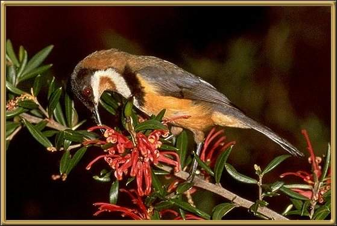

These birds are honeyeaters. They tend to be solitary, and have a fairly wide distribution through the eastern seaboard. We see them quite often in our garden. Their long curved bill goes into tubular flowers with great ease and we have seen them on occasion hovering while eating.
Photographer: N Chafer